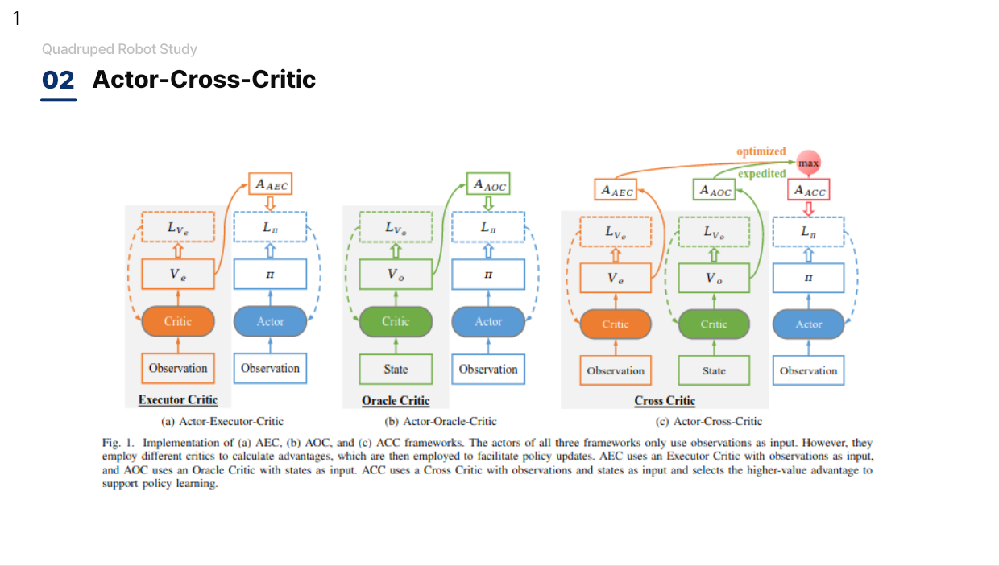
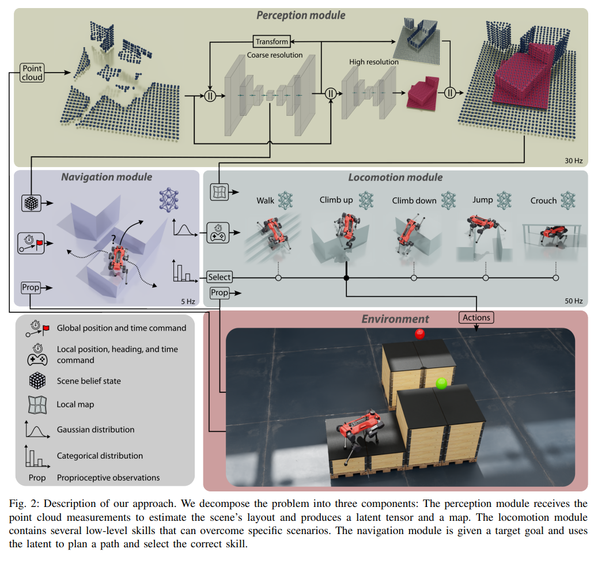
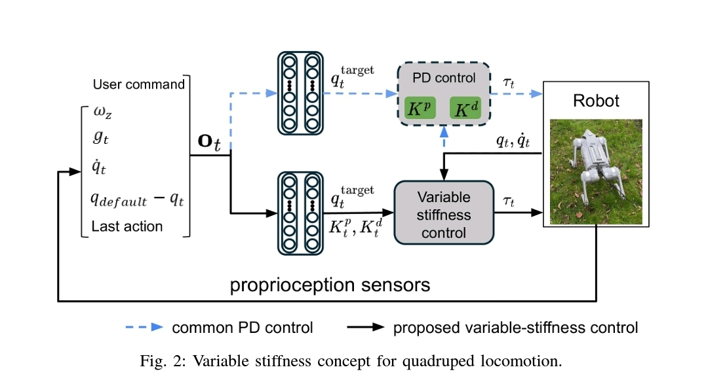
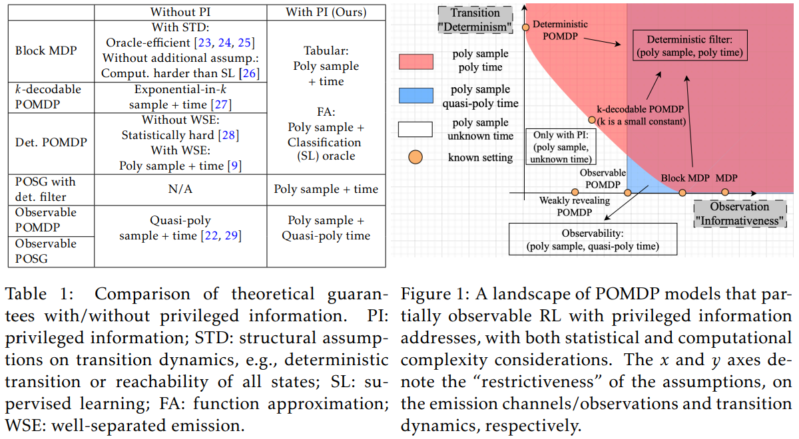

[2] 3mins papers
paper
3mins
Actor-Cross-Critic/ANYmal Parkour/Stiffness Tuning/Privileged Information
Actor-Cross-Critic
Leveraging Privileged Information for Partially Observable Reinforcement Learning
- VAE 등을 사용하는 방법들은 간접적인 정보 제공을 하기 때문에 Asymmetric Actor Critic 구조의 문제를 해결해야 함
- 두개의 Critic 네트워크들을 학습하고 Advantage가 더 큰 값을 선택하여 Actor에게 제공하는 방법. Oracle Critic과 Executor Critic 2개의 네트워크를 가지고 Overestimation 문제를 방지
- 이러한 ACC의 학습 과정이 기존의 Actor Critic 방법보다 더 안정적이고 빠르게 수렴함을 증명
- Paper Link

ANYmal Parkour
Learning Agile Navigation forQuadrupedal Robots
- 완전 학습 기반(fully learned) 네비게이션: 환경의 3D 재구성 정보를 활용하여 보행 기술을 동적으로 선택.
- 하이브리드 정책 구조: PPO 기반으로 Gaussian 분포(저수준 명령) + 범주형 분포(기술 선택)를 결합.
- 새로운 보행 기술 학습: 점프, 등반, 웅크리기 등 다양한 역동적 동작을 학습하여 높은 장애물도 극복 가능.
- 신경망 기반 3D 환경 재구성: 다중 해상도 맵핑을 통해 로봇 주변은 고해상도로, 멀리 있는 환경은 저해상도로 인식하여 실시간 처리 성능을 확보.
- 지금까지 연구해온 연구 내용들을 총망라하여 perception 부터 agile한 control까지 가능하게 만드는 시스템을 구축한 느낌을 받음
- Paper Link

Stiffness Tuning
Variable Stiffness for Robust Locomotion through Reinforcement Learning
- 강화학습 보행 제어에서, joint stiffness 튜닝 없이도 성능을 유지하면서 변수 stiffness p gain을 action space에 통합하는 새로운 제어 패러다임을 제안.
- stiffness을 관절별(PJS), 다리별(PLS), 하이브리드(HJLS)로 그룹화하여 제어하는 방식을 적용하여 PLS는 속도 추적 및 외력 대응에서 우수하며, HJLS는 에너지 효율성을 극대화하는 결과를 보여줌
- Pd 튜닝 중 d 게인은 p 게인에 의존 변수로 놓았고 기존의 action space 디자인을 색다르게 했다는 점에서 참신한 것 같음. 강화학습 보행제어에서 관습적으로 하는 부분을 건드렸다는 측면에서 새로웠음.
- Paper link

Privileged Information
Provable Partially Observable Reinforcement Learning with Privileged Information
- 강화학습은 무조건 적으로 Partially Observable MDP (POMDP) 환경이며, 학습 단계에서 시뮬레이션에서만 얻을 수 있는 노이즈가 없는 깨끗한 데이터인 특권 정보 (Privileged Information) 이 존재함. 예를 들어 노이즈가 없는 완전한 상태 정보를 이용하면 정책을 학습하는데 도움이 되며, 실제 실행에서는 전문가 증류 (expert distillation) 과 비대칭 액터-크리틱 (훈련과 실행 단계에서 다른 관찰값을 사용하는 방식 - 크리틱은 특권 정보를 활용하여 평가, 액터는 제한된 관찰값만을 사용)을 이용하여 현실 데이터에 적용함.
- 최근 증류 기법이 여러 학습에서 매우 뛰어난 성능을 보이고 있음. 그러나 최근 적용되고 있는 증류기법은 항상 최적 정책을 보장하지 않으며, 근사 최적 정책을 학습하는 과정에서 손실이 발생함. 저자들은 POMDP에서 관찰값을 통해 현재의 진짜 상태 (state)를 결정할 수 있는 조건을 만족하는지에 대한 여부를 결정론적 필터 조건 (Deterministic Filter Condition)으로 정의함. 이 조건, 즉 필터가 결정론적일 경우에 (관찰값이 주어지면 현재 상태를 정확하게 추론이 가능할 때), 전문가 증류의 손실을 방지할 수 있음. 예시로, 로봇 손을 이용한 물체 조작은 (조건: 로봇이 손에 있는 물체의 위치와 방향을 정확히 측정할 수 있다면, 결과: 관찰을 통해 물체의 실제 상태를 결정할 수 있음) 이 조건을 만족함. 자율 주행 차량에서는 (조건: 도로의 미끄러움 정도는 차량 센서로 알 수 없음. 결과: 센서값이 동일해도 도로의 미끄러움 정도는 달라질 수 있음) 이 조건을 만족하지 않음.
- 이 논문은 NIPS 논문이며, 수식적 증명이 들어가는 논문으로 72 페이지의 분량을 가지고 있네요. 리뷰어들이 고생을 많이 했겠습니다.. 이 논문의 아이디어를 차용해 보자면, 증류 및 비대칭 액터-크리틱은 적용할 수 있겠습니다. 다만, 사족보행 로봇은 이 ’결정론적 필터 조건’이 충족되지 않을 조건을 너무 많이 가지고 있기에, 이 논문의 아이디어를 적용해 보려면 적당한 assumption을 통해서 lower bound를 찾아내어 적용해 보는 것도 재미있겠다는 생각이 드네요
- Paper Link
